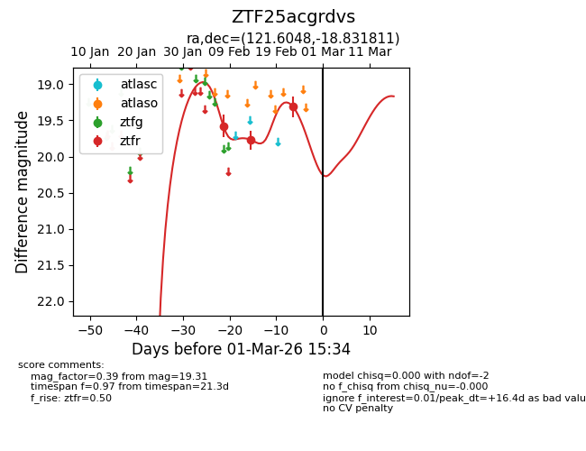
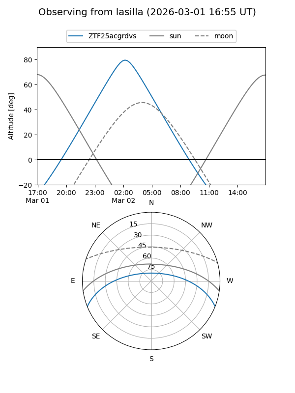
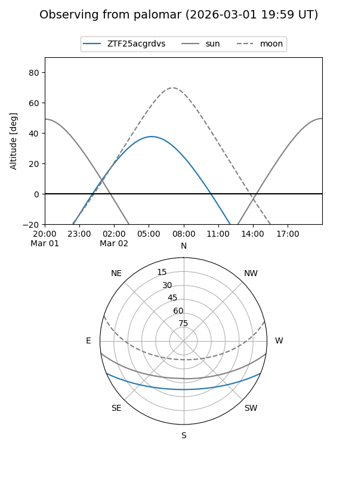
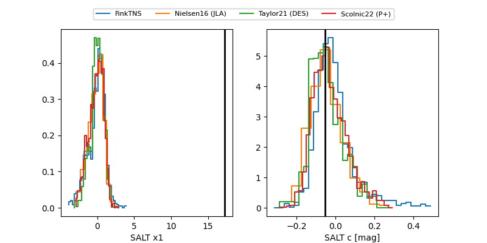

ZTF25acgrdvs
Target ZTF25acgrdvs at 2026-03-01 15:37
Aliases and brokers:
FINK: link
Lasair: link
ALeRCE: link
alt names
ZTF25acgrdvs (ztf,fink_ztf)
Coordinates:
equatorial (ra, dec) = 121.6048,-18.83181
equatorial (HMS+DMS) = 08:06:25.16,-18:49:54.52
galactic (l, b) = (238.3525,+7.09479)
Flags:
Photometry:
last ztfr=19.31
3 ztfr detections
Lightcurve

Visibility


Additional plots
